Lactic
Speed Endurance
3x(300m + 200m)
Log reps, splits, races and strength work in one diary. Coach plans your week around your event, recent training and season. Keep your reps and race records together.
Free account required. Sign in with Apple or Google.
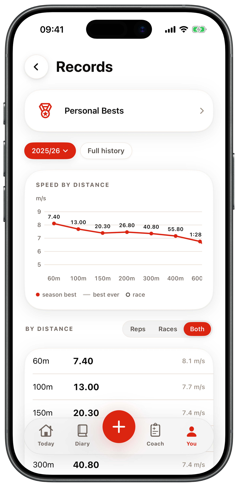
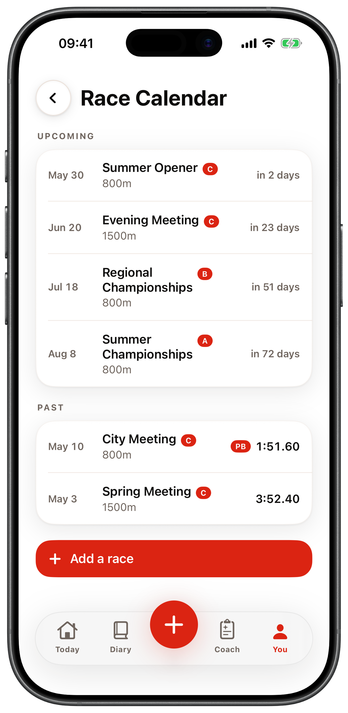
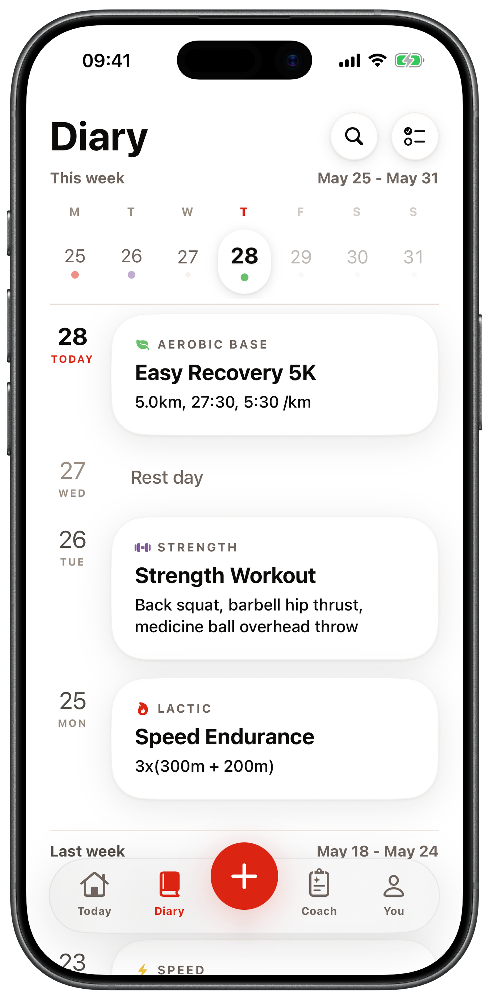
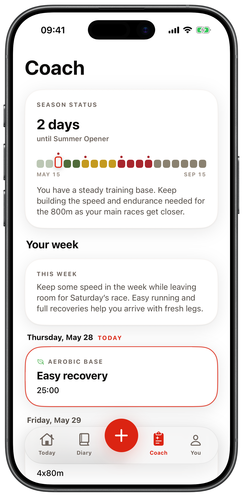
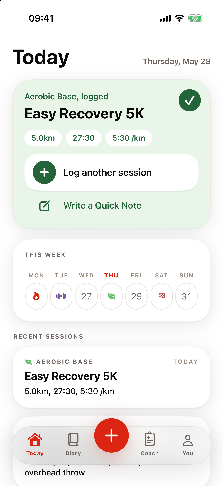
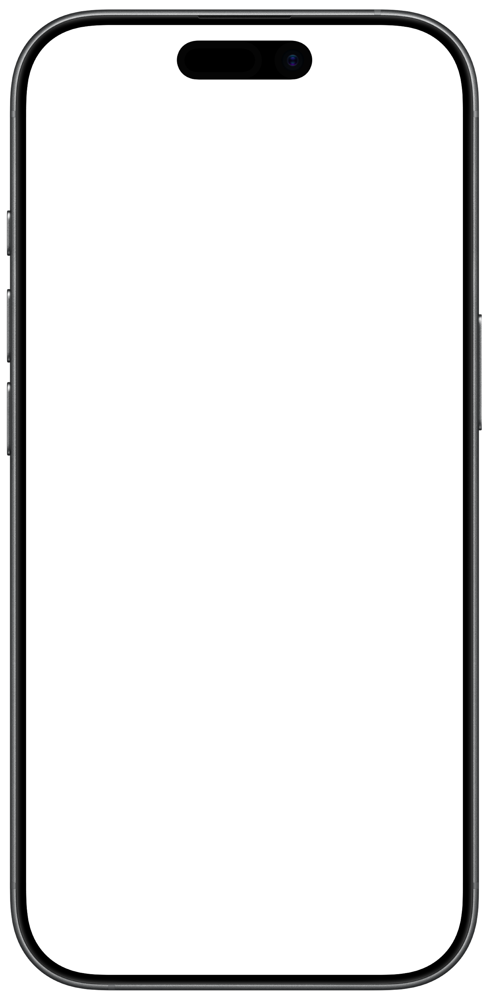
For track athletes
StrideBuddy recognizes sprint work, speed endurance, aerobic quality, tempo, hills, strength, and race day.
Lactic
3x(300m + 200m)
Aerobic base
5.0km, 27:30, 5:30 /km
Strength
Back squat, barbell hip thrust, medicine ball overhead throw
Race
800m, 1:51.60, PB
Features
StrideBuddy knows that a tempo run and a set of 300s are different kinds of work.
They all open from the same Log button.
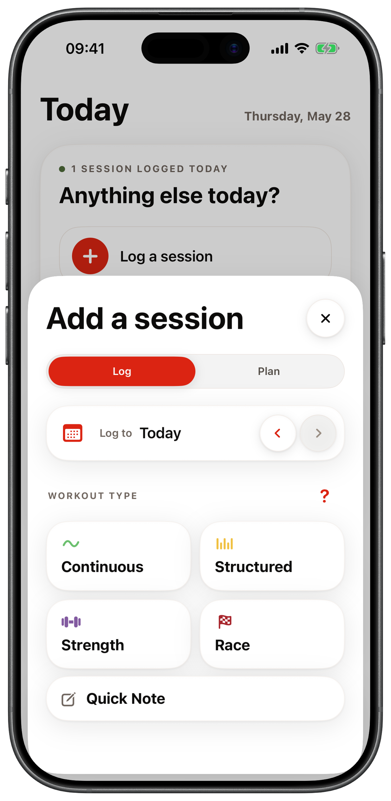
Build sessions from blocks, reps, splits, and recoveries.
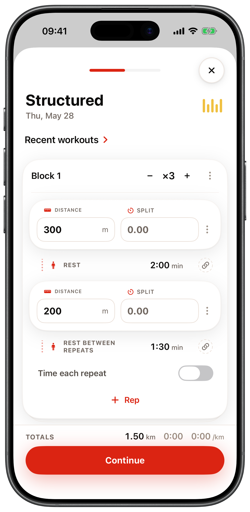
Tap exercises to add them, or begin with a template.
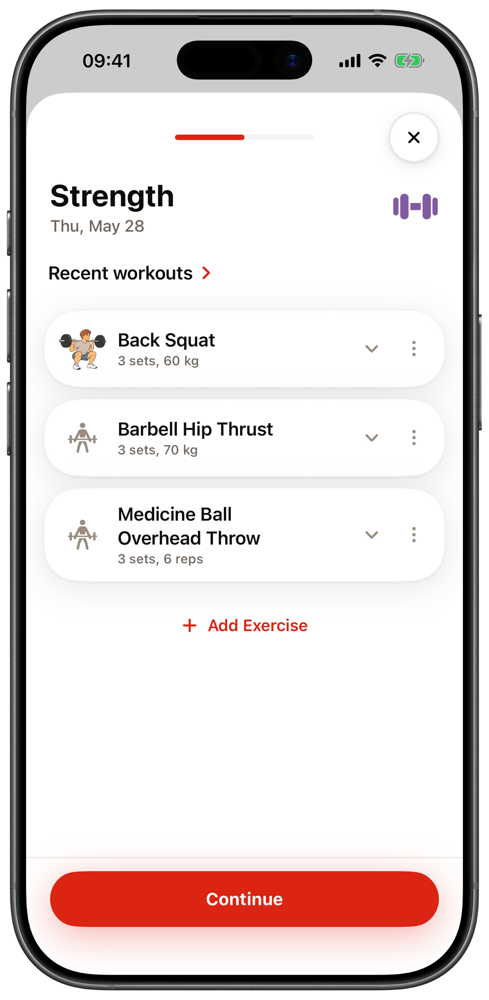
Coach uses modern periodization to change your training focus through the season.
Reps and races shown side by side and never scored.
The basic log is quick. Open Optional Signals when you want more.
Plan
The tray that logs a session will also plan one. Switch it to Plan, choose a day ahead, and pick the workout type you have in mind.
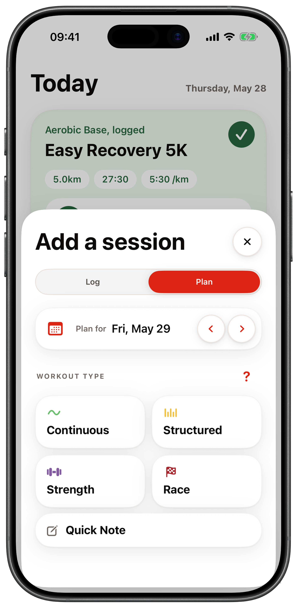
Coach
Coach builds a weekly plan from your event, recent training, available days and races. The season sets the direction. Your diary helps it choose how much work to prescribe.
Coach uses AI to write the plan within event-specific training rules. It is a free beta feature and needs an internet connection to build or change a plan.
Modern periodization
Periodization means changing the focus of training over time. Build a base, develop the qualities your event needs, then prepare for racing. Easier weeks and recovery are part of the plan.
Coach keeps useful training qualities in the plan as the main focus changes. It considers your recent sessions and race priorities when choosing the next week's work.
A return from a break starts with a gradual return to training. A nearby race can change the week's preparation. The plan follows your situation.
Season status
2 days
until Summer Opener
Each session has a purpose
Open a Coach session to see its reps, recoveries and execution cues. Read what the session develops and how it supports your event.
Coach can include time or pace ranges when your recent training and personal bests support them. A session can also come without a numerical target.
Use the planned session to start your log when its day arrives. Record the result you actually ran.
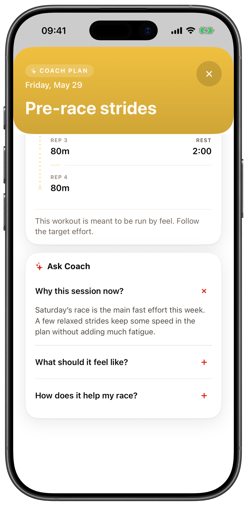
Volume
The You tab adds up the running distance you logged, with a bar for each week. Open a week to see its days and sessions.
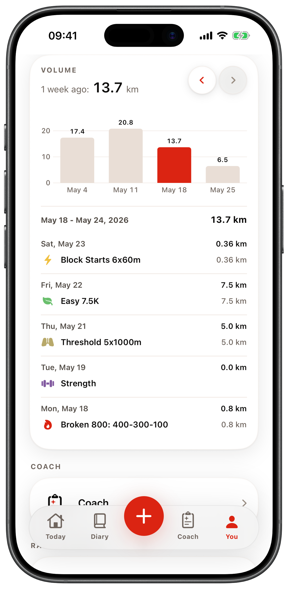
Records
Records brings your fastest reps and races onto one page. A hand-drawn signature curve follows the distances you run, and the ledger lists your times by distance. You can look at a single season or your full history.
Races
The race calendar keeps upcoming meets and past results on one page. A race you entered weeks ahead and a race you logged straight into the diary both appear here, so the list stays complete.
iPhone and web
The web app uses the same account as the iPhone app. Sign in on web.stridebuddy.app to see the same diary.
Your sessions sync between the iPhone app and the web app.
Use it on a computer or on a phone that is not an iPhone.
You do not need to install anything.
How it works
Pick the workout type and enter the details you want to remember, such as reps, splits, recovery, and feel.
StrideBuddy saves and names the session, then categorizes it with your event in mind.
Find the session in your Diary, check your records and see how much running you logged that week.
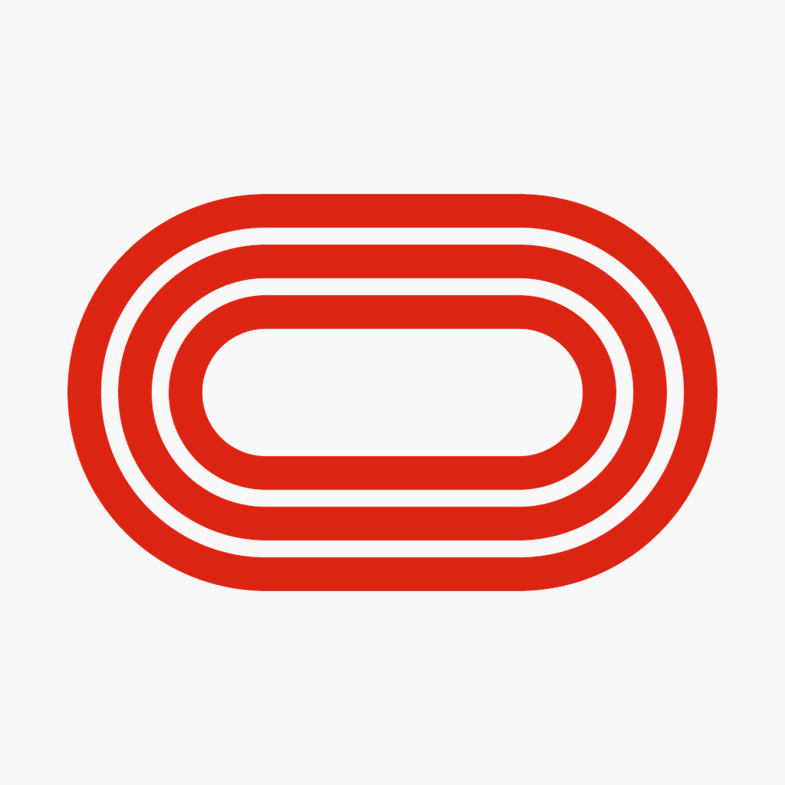
Download StrideBuddy for iPhone to log workouts, strength work, races, and recovery.